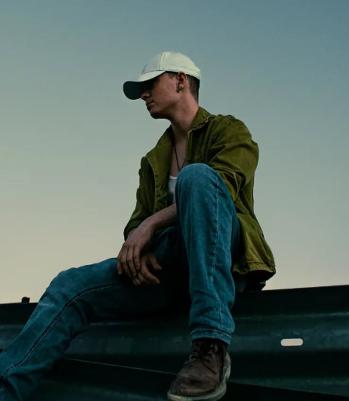

Soy Alejandro Fernandez, fotógrafo y filmmaker autodidacta estudiante de Tecnologia Digital y Multimedia enfocado en la creación de contenido multimedia 360 y te invito a conocerme.
Sinceramente, aún no lo sé, pero estoy en ello. Me llamo Alejandro Fernández y he estado viviendo de aqui para allá entre Madrid y Valencia. Soy graduado, en ello estoy y lo que quiero es ser un profesional del sector audiovisual, un fotógrafo y filmmaker que pueda aportar su visión del mundo a través de la cámara.
Desde siempre he admirado a los artistas capaces de crear un grupo en el que apoyarse de talento y de pasión por lo que hacen. En mi caso, decidí ser yo quien lo creara: un grupo, un sello, una familia en la que los artistas emergentes sin muchos recursos puedan apoyarse unos con otros y poder llevar a cabo trabajos que por solitario no podrían, y es así como nace: SPANISH POINTER.
"Nothing happens in the real world? Are you out of your f**** mind?" Esa frase, ese diálogo, esa pelicula se me quedó clavada. El mundo está lleno de historias, de personas, de momentos que contar y creo que un filmmaker o un fotógrafo es aquel con la valentía de hacerlo, yo por suerte tengo una cámara y ojalá tener siempre la valentía.
Después de 4 años estudiando el Grado en Tecnología Digital y Multimedia y toda una vida de interés y desarrollo autodidacta por el sector audiovisual y la fotografía, he decidido dar el paso y crear mi portfolio web
Un proyecto personal que he realizado para practicar y experimentar con diferentes técnicas de edición y grabación. Son los videos que más me gustan realizar por lo que significan.
Vas cominando con tu canción favorita y piensas "estoy en un videoclip", a mi me pasa todo el rato. Por eso, me encanta crear edits musicales, para que la gente pueda experimentar esa sensación e intentar dar a conocer a artistas que me gustan. Por cierto, artistas emergentes estoy libre...
No solo son edits de viajes a un sitio, creo también que de son viajes de un momento de mi vida, un viaje por lo que he sentido en cada toma, un viaje por lo que he vivido. En esta sección encontrarás algunos de los viajes que he realizado.

Uno de mi estilos favoritos de fotografía. Descubrir personas, lugares y experiencias. En esta sección encontrarás a modelos con experiencia y otros que era la primera vez que se ponían delante de una cámara.

Un estilo en el que me gustaría adentrarme y especializarme más. Aquí encontrarás algunas competiciones de karate y otros deportes en entornos urbanos.
Naturaleza o Ciudad. Verde o Gris hormigón. Una coleccion de paisajes naturalistas y urbanos.

Sinceramente, es un tipo de fotografía que solo he realizado una vez cuando me tocó de cerca y es a su vez el proyecto fotográfico que más dedicación he otrogado

¿Sabeis esa típica cosa que os gusta mucho y os sentis muy stisfechos cuando lo haceis pero siempre hay una excusa para no ponerse? Os presento la mía

Gracias a mi formación en GTDM he adquirido una serie de habilidades muy transversales que me permiten adaptarme a diferentes entornos de trabajo, proyectos y problemas. Además del conocimiento para el uso de herramientas digitales y electrónicas como dispositivos IoT, sistemas de sonido, redes, cámaras, VR/AR... y softwares así como diferentes lenguajes de programación
Por el otro lado, la transversalidad del grado y la experiencia adquirida a lo largo de los años por curiosidad y pasión por el sector audiovisual me han permitido adquirir una serie de habilidades artísticas y creativas que me permiten adentrarme en nuevos proyectos con confianza y seguridad que van desde marketing y diseño web al branding fotografía, vídeo... con programas como Photoshop, Illustrator, Premiere, After Effects, Blender...


Si quieres hablar conmigo para dudas, colaboraciones o lo que sea, por favor, no dudes en escribirme